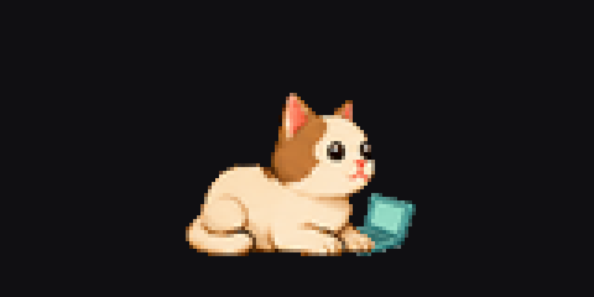

First launch
- Unzip
Pawcessor-macos.zipand dragPawcessor.appinto Applications. - Control-click the app and choose Open. Confirm Open if macOS asks.
- If you still see “Not Opened”, go to System Settings, Privacy & Security, then Open Anyway.
This preview is ad-hoc signed, not notarized. Apple has not checked it. A notarized build comes later.
What you see
Laptop, sphinx poseAn agent is working
Alert, ears upNeeds input
Short hop, then a badgeDone, waiting for you
Soft recovery poseBlocked or failed
HeartsYou just pet it
Head down at a bowlYou just fed it

Local only
No accounts, no analytics, no internet sockets. It never asks for Accessibility, Input Monitoring, Screen Recording, camera, or microphone.
Optional Orca support reads one private status file on your Mac. Prompts and code stay unread. Click the cat to pet it. Feed is in the menu-bar pawprint.